Catalyst Materials Design
Synthesis and active-site engineering of single-atom, core-shell, and high-entropy materials.
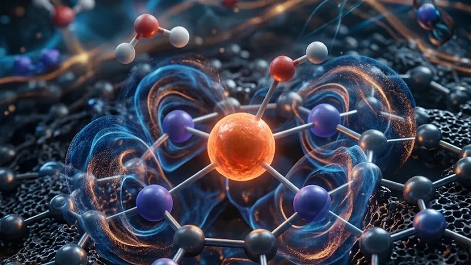
Our lab develops materials for energy conversion, integrating operando X-ray spectroscopy, electrochemical measurements, and catalyst design. We reveal the dynamic structural evolution of catalysts during reactions to guide the rational design of catalytic interfaces for real-world energy technologies.
Synthesis and active-site engineering of single-atom, core-shell, and high-entropy materials.

Resolving the electronic and local structural evolution of catalysts under reaction conditions using operando XANES/EXAFS.
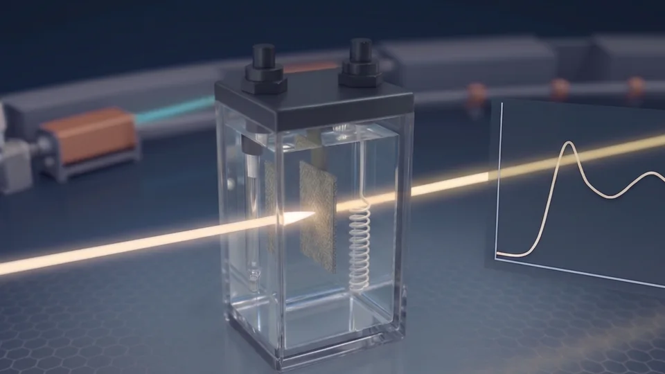
Water electrolysis (HER/OER), CO₂ reduction, and redox flow batteries.
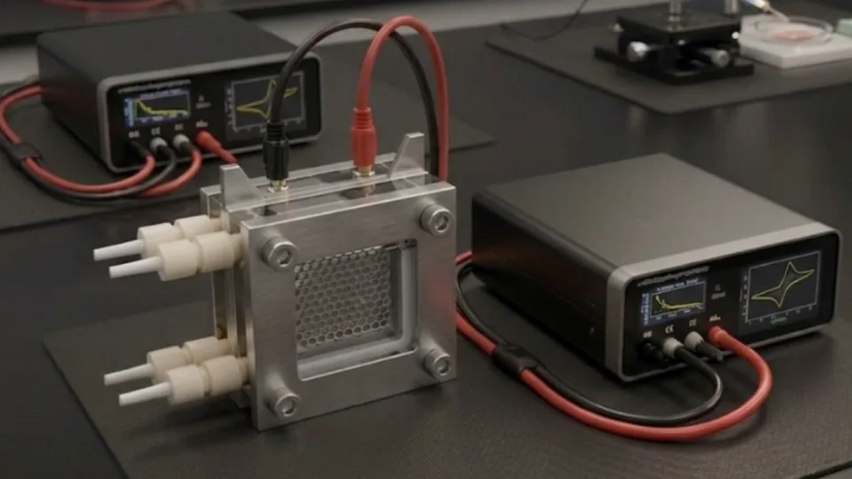
Our latest paper on Urea Electrosynthesis has been selected and highlighted as Taiwan New Discoveries by the Natural Science Library Service Project: Chemistry Division!
Read the Feature Article | Read our Paper
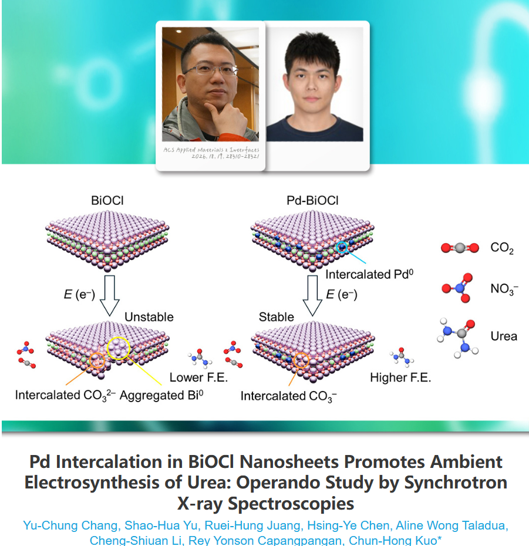
Section chair activity at ICAPS 2026, hosted at Feng Chia University, Taichung, Taiwan.
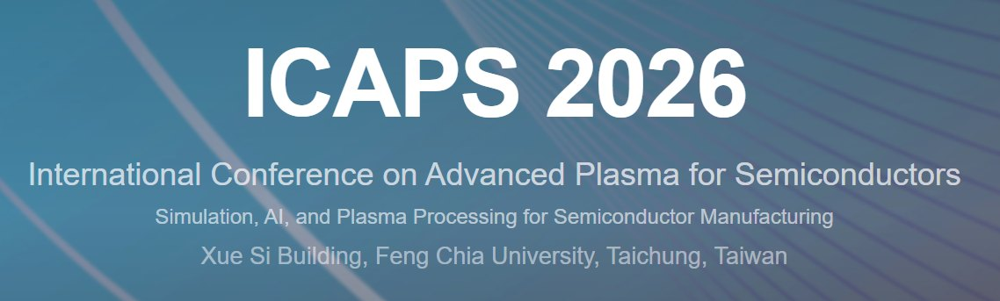
Invited talk on functional materials for energy applications, synthesis, spectroscopy, and interface engineering.
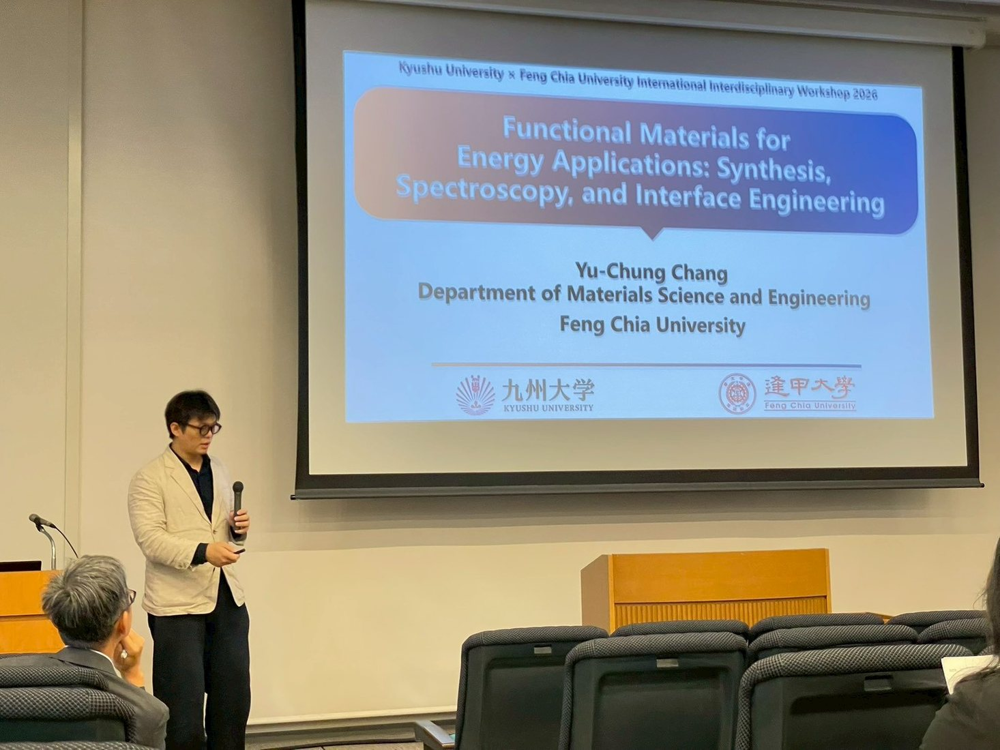
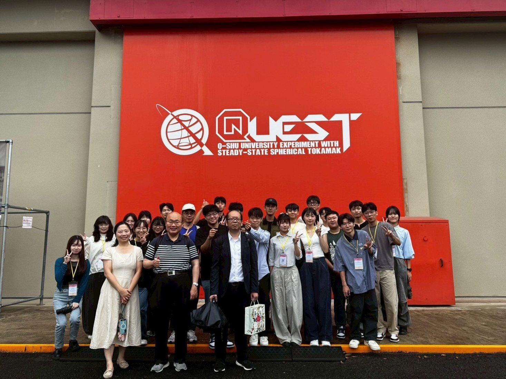
We had the honor of hosting Professor Chun-Hong Kuo from the Department of Applied Chemistry at National Yang Ming Chiao Tung University (NYCU) for a special seminar in the Department of Materials Science and Engineering at Feng Chia University.
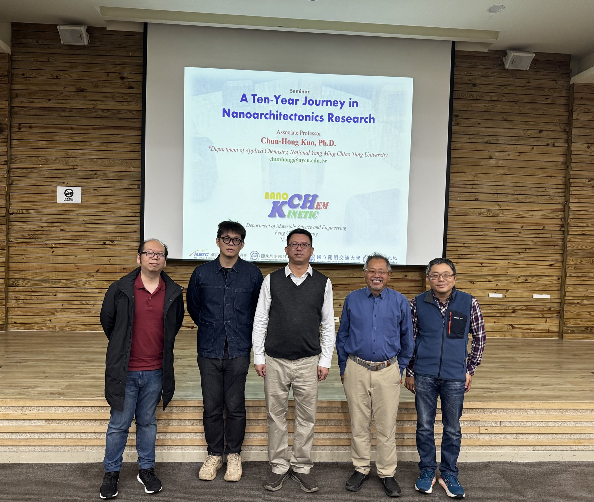
Oral presentation at Pacifico Yokohama, Japan: Sub-nanocluster Fe Decorated Pt Nano-catalysts Synthesized at Low Temperature for Boosted H₂ Evolution in Alkaline Media.
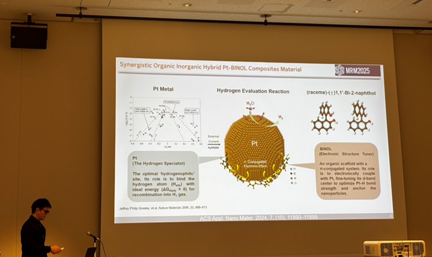
Poster Competition Award of Excellence at the NSRRC Annual Users' Meeting & Workshops.
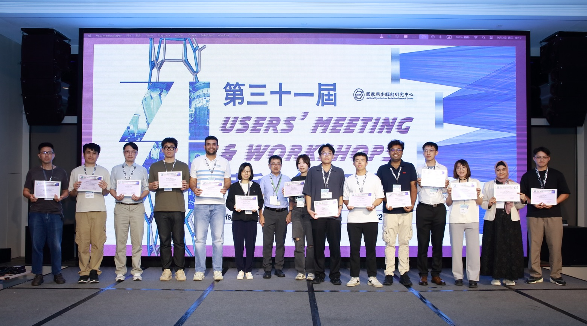
Oral talk at MSU at Naawan, Philippines.
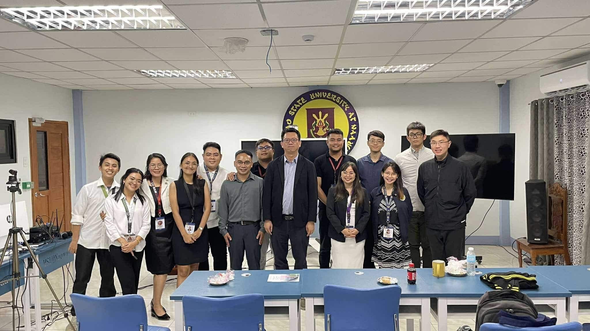
Invited talk at National Chung Hsing University.
Oral talk at CMU, Thailand.
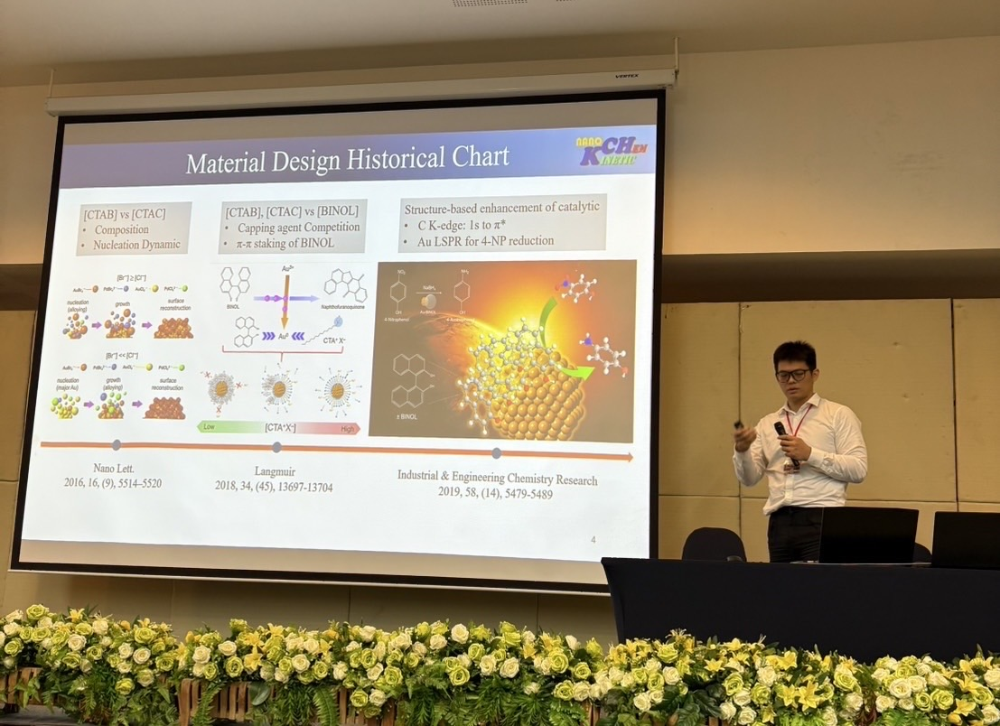
Join CORE Lab
We welcome inquiries from prospective graduate students and undergraduate students interested in joining a faculty-supervised research project in electrocatalysis, energy materials, or operando X-ray absorption spectroscopy.
We especially welcome first- and second-year undergraduate students who wish to join the lab early and develop their research experience over time.
Please include a short CV, academic transcript, and a brief description of your research interests.
Contact Prof. Chang